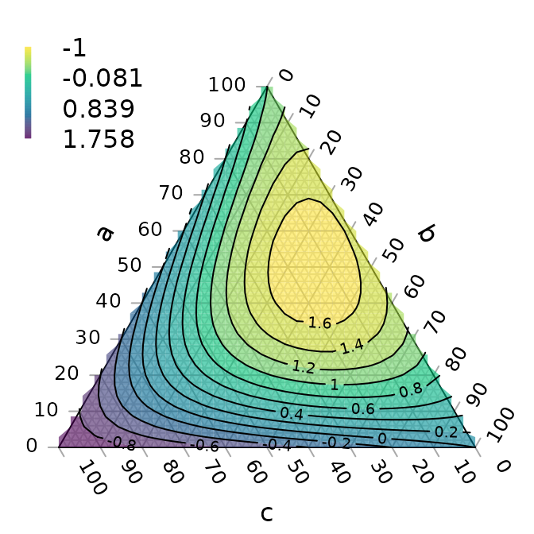
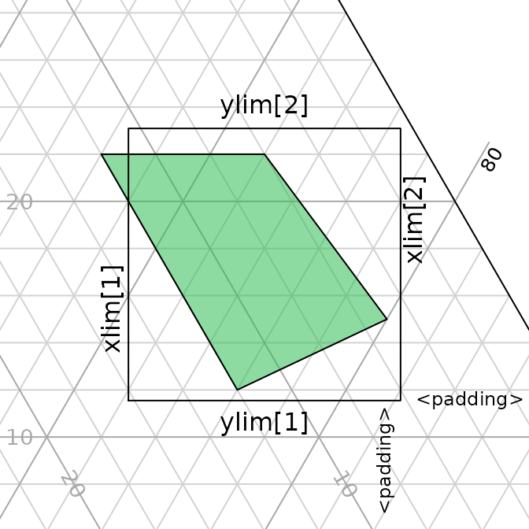

Ternary is an R package to allow the creation of ternary plots in the standard R graphics environment. I hope that it proves simple to use.
Install the package with:
Or if you want the latest development version of the package:
Once the package is installed, load it into the current R session with
There are two stages to creating a ternary plot: first, rendering the plot, styled as you like it and pointing in any of the four compass directions; secondly, adding data.
Create a blank plot
At its simplest, all you need to do is type

The following charts show which corners are which, under different orientations:
par(mfrow=c(2, 2), mar=rep(0.5, 4))
for (dir in c('up', 'right', 'down', 'le')) {
TernaryPlot(point=dir, atip='A', btip='B', ctip='C',
alab='Aness', blab='Bness', clab='Cness')
TernaryText(list(A=c(10, 1, 1), B=c(1, 10, 1), C=c(1, 1, 10)),
col=cbPalette8[4], font=2)
}
Plot two stylised plots side by side, and plot data
par(mfrow=c(1, 2), mar=rep(0.3, 4))
TernaryPlot(alab="Redder \u2192", blab="\u2190 Greener", clab="Bluer \u2192",
point='right', lab.cex=0.8, grid.minor.lines=0,
grid.lty='solid', col=rgb(0.9, 0.9, 0.9), grid.col='white',
axis.col=rgb(0.6, 0.6, 0.6), ticks.col=rgb(0.6, 0.6, 0.6),
padding=0.08)
data_points <- list(
R = c(255, 0, 0),
O = c(240, 180, 52),
Y = c(210, 222, 102),
G = c(111, 222, 16),
B = c(25, 160, 243),
I = c(92, 12, 243),
V = c(225, 24, 208)
)
AddToTernary(points, data_points, pch=21, cex=2.8,
bg=vapply(data_points,
function (x) rgb(x[1], x[2], x[3], 128, maxColorValue=255),
character(1))
)
AddToTernary(text, data_points, names(data_points), cex=0.8, font=2)
legend('bottomright',
legend=c('Red', 'Orange', 'Yellow', 'Green'),
cex=0.8, bty='n', pch=21, pt.cex=1.8,
pt.bg=c(rgb(255, 0, 0, 128, NULL, 255),
rgb(240, 180, 52, 128, NULL, 255),
rgb(210, 222, 102, 128, NULL, 255),
rgb(111, 222, 16, 128, NULL, 255)),
)
###
# Next plot:
###
TernaryPlot('Steam', 'Ice', 'Water',
grid.lines=5, grid.lty='dotted',
grid.minor.lines=1, grid.minor.lty='dotted',
point='West')
HorizontalGrid()
middle_triangle <- matrix(c(
30, 40, 30,
30, 30, 40,
55, 20, 25
), ncol=3, byrow=TRUE)
TernaryPolygon(middle_triangle, col='#aaddfa', border='grey')
TernaryLines(list(c(0, 100, 0), middle_triangle[1, ]), col='grey')
TernaryLines(list(c(0, 0, 100), middle_triangle[2, ]), col='grey')
TernaryLines(list(c(100, 0, 0), middle_triangle[3, ]), col='grey')
TernaryArrows(c(20, 20, 60), c(30, 30, 40), length=0.2, col='darkblue')
It is also possible to use cartesian coordinates to plot onto the graph.
By default, the plotting area is a 1x1 square.
par(mar = rep(0, 4)) # Reduce margins
TernaryPlot(point='right', clockwise = FALSE)
cat("X range in this orientation:", TernaryXRange())## X range in this orientation: -0.0669873 0.9330127## Y range in this orientation: -0.5 0.5arrows(x0=0.5, y0=0.4, x1=sqrt(3)/2, y1=0.4, length=0.1, col=cbPalette8[2])
text(x=mean(c(0.5, sqrt(3)/2)), y=0.4, "Increasing X", pos=3, col=cbPalette8[2])
text(x=0.5, y=0, "(0.5, 0)", col=cbPalette8[3])
text(x=0.8, y=-0.5, "(0.8, -0.5)", col=cbPalette8[3])
Note the anticlockwise axis labelling on this plot, obtained using clockwise = FALSE.
Contours
A plot can be coloured and contoured according to the output of a mathematical expression:
par(mar=rep(0.2, 4))
TernaryPlot(alab = 'a', blab = 'b', clab = 'c')
FunctionToContour <- function (a, b, c) {
a - c + (4 * a * b) + (27 * a * b * c)
}
values <- TernaryPointValues(FunctionToContour, resolution=24L)
ColourTernary(values)
TernaryContour(FunctionToContour, resolution=36L)
or by according to the density of points across the plot:
par(mar=rep(0.2, 4))
TernaryPlot()
nPoints <- 4000L
coordinates <- cbind(abs(rnorm(nPoints, 2, 3)),
abs(rnorm(nPoints, 1, 1.5)),
abs(rnorm(nPoints, 1, 0.5)))
ColourTernary(TernaryDensity(coordinates, resolution=10L))
TernaryPoints(coordinates, col='red', pch='.')
TernaryDensityContour(coordinates, resolution=30L)
The following image demonstrates the behaviour of the density estimates when points fall on boundaries of the triangular grid cells; text denotes the number of points within the cell, with cells straddling n cells contributing 1/n of a point to each cell straddled.

Magnification
Perhaps the action on a plot is constrained to a small region of ternary space. It’s possible to “zoom in” – i.e. magnify and crop the ternary plot to the region of interest.
To do this you can specify the x and y limits of the region of interest.
TernaryCoords might be useful in establishing the cartesian coordinates of a particular point in ternary space.
Ensure that dx = dy if you want an isometric plot.
my_corners <- list(c(22, 66, 12), c(22, 72, 6), c(15, 80, 5), c(12, 76, 12))
lapply(my_corners, TernaryCoords, direction=1)## [[1]]
## [1] 0.2700000 0.1905256
##
## [[2]]
## [1] 0.3300000 0.1905256
##
## [[3]]
## [1] 0.3750000 0.1299038
##
## [[4]]
## [1] 0.320000 0.103923The padding parameter is added as a margin to each side of the region specified using xlim and ylim:
TernaryPlot(xlim=c(0.28, 0.38), ylim=c(0.1, 0.2), padding=0.04)
# Annotate grid lines at user-specified points:
TernaryText(list(c(8, 72, 20), c(8, 82, 10)), c(20, 10), srt=-60, cex=0.9, col='darkgrey')
TernaryText(list(c(10, 69, 21), c(20, 64, 16)), c(10, 20), srt=0, cex=0.9, col='darkgrey')
# Plot desired polygon
TernaryPolygon(my_corners, col='#2cbe4e')
# Show xlim, ylim and padding, using cartesian coordinates
lines(c(0.28, 0.28, 0.38, 0.38, 0.28), c(0.1, 0.2, 0.2, 0.1, 0.1))
text(0.28, 0.15, "xlim[1]", pos=2, srt=90)
text(0.38, 0.15, "xlim[2]", pos=4, srt=90)
text(0.33, 0.1, "ylim[1]", pos=1)
text(0.33, 0.2, "ylim[2]", pos=3)
text(0.38, 0.1, '<padding>', pos=4, cex=0.75)
text(0.38, 0.1, '<padding> ', pos=2, cex=0.75, srt=90)
Bugs and feature requests
I hope the package proves useful. If there’s anything it can’t do that you wish it could, please let me know by opening a Github issue.